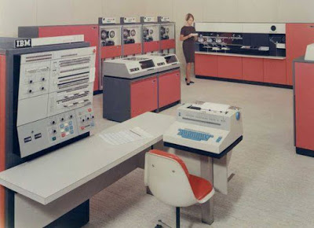

A terceira geração de computadores é marcada pela utilização dos circuitos integrados, feitos de silício. Também conhecidos como microchips, eles eram construídos integrando um grande número de transistores, o que possibilitou a construção de equipamentos menores e mais baratos.
Mas o diferencial dos circuitos integrados não era o apenas o tamanho, mas o processo de fabricação que possibilitava a construção de vários circuitos simultaneamente, facilitando a produção em massa. Este avanço pode ser comparado ao advento da impressa, que revolucionou a produção dos livros.
Foi quando surgiram as linguagens de alto nível, como Cobol,Pascal, Fortran e Basic, uma linguagem é considerada de alto nível quando ela pode representar ideias abstratas de forma simples, diferente da linguagem de baixo nível que representa as próprias instruções de máquina.
O IBM System/360 (S/360) constitui-se numa família de mainframe lançada pela IBM em 7 de Abril de 1964. Foi a primeira família de computadores a fazer uma distinção clara entre a arquitectura e a implementação, permitindo que a IBM lançasse um conjunto de projectos compatíveis em várias faixas de preço. Foi comercialmente muito bem-sucedido, permitindo que os consumidores comprassem um sistema menor sabendo que sempre poderiam migrar para um modelo mais avançado em caso de necessidade. O projecto é considerado por muitos como sendo um dos mais bem-sucedidos da história dos computadores, influenciando o desenho de novas máquinas por anos a fio. O responsável pela arquitectura do S/360 foi Gene Amdahl.